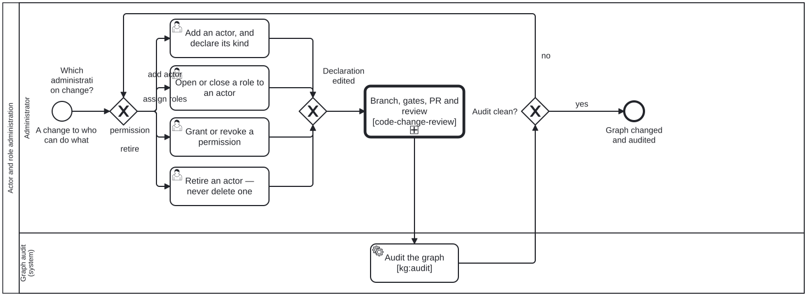

Generated from
cat-harness/processes/process/actor-role-administration.bpmnbygen-processes-viz.ts— do not edit here. All processes
Process_ActorRoleAdministration · strict · 6 step(s)
Changing who can do what: adding an actor, opening or closing a role to one, granting or revoking a permission — and auditing the graph afterwards, because the declaration and the graph are two things that can disagree.
You are in this process when the substrate every other diagram’s lanes bind to is what is changing. That is why it is drawn rather than left as a filesystem edit: a role added without an audit is a lane binding that resolves today and may not tomorrow, and nothing else in the corpus would notice.
Retirement, never deletion. An actor id is referenced from commits, sidecars and other declarations, so removing one makes an old record unreadable while retiring one leaves it legible and says the actor has stopped.

| lane | role | what it does here |
|---|---|---|
| Administrator | administrator |
All four administration verbs — add, assign, grant, retire — converge at Gateway_Changed onto the same CallActivity_CodeChangeReview, so no kind of substrate edit gets a lighter review path than another; and Gateway_AuditClean’s ‘no’ branch (A13) loops back to this lane rather than ending the process, because whether a major finding holds the change is this lane’s policy call, not something Task_RunKgAudit decides for it. |
| Graph audit (system) | build-pipeline |
Runs only after CallActivity_CodeChangeReview has already completed its own review, because the breakage this lane exists to catch — a join across role, lane, actor and skill — is invisible to a code reviewer reading the diff in isolation; ordinary code review clears the edit, and only this lane’s whole-graph pass can tell whether it silently broke something three diagrams away. |
Every one of the 6 step(s) is documented.
| step | lane | skill / sub-process | what it does |
|---|---|---|---|
Add an actor, and declare its kindTask_AddActor |
Administrator | role-model |
Human, agentic or mechanical. A userTask because the agentic/mechanical line is JUDGEMENT — role-model.md says so — and reading it wrong disqualifies the actor from every judgement task it exists to perform, silently. |
Open or close a role to an actorTask_AssignRoles |
Administrator | role-model |
The join every other diagram depends on. An empty roles is a DETERMINED empty — it says the actor takes on none — and is not the same as an absent one, which asserts nothing. |
Grant or revoke a permissionTask_GrantOrRevoke |
Administrator | role-model |
A permission travels with the PARTICIPANT and cross-cuts every lane, so unlike a role it cannot be scoped by the diagram it is used in. Granting one is a standing decision, which is why this lane is person-only and why the log capture on this process is on. |
Retire an actor — never delete oneTask_RetireActor |
Administrator | deletion-requires-confirmationrole-model |
An actor id is referenced from roles, diagrams, beans and commits, so removing the file leaves every one of those unable to tell retirement from accident. Same rule, and the same reason, as a scrapped bean. |
Branch, gates, PR and reviewCallActivity_CodeChangeReview |
Administrator | calls Code change and reviewprepare-mergecontinual-progress |
Called rather than restated. The mechanics of getting an edit reviewed and merged are not specific to the role graph, and a second description of them is a second thing free to disagree with the first. |
Audit the graph [kg:audit]Task_RunKgAudit |
Graph audit (system) | role-model |
AFTER the change, not before. Every criterion here is a join — role to lane, actor to role, activity to skill — so what an administrative edit breaks is not in the file it edited. The sidecars under test/results/kg-qa/ are committed for the reason a printed verdict is not: without them, “unbound since it was drawn” and “broken by this change” are indistinguishable. |
Every one of the 2 decision(s) is documented.
| decision | what decides it | branches |
|---|---|---|
Which administration change?Gateway_WhichChange |
Read from the request. Deliberately NOT DMN-backed: the four branches are not computable from a fact anyone reports — they are what was asked for, and a table that pretended otherwise would return an answer that is not the request. | add actor → Add an actor, and declare its kind assign roles → Open or close a role to an actor permission → Grant or revoke a permission retire → Retire an actor — never delete one |
Audit clean?Gateway_AuditClean |
The administrator’s call, not the pipeline’s: kg:audit:check fails on critical and kg:audit:strict adds major, so what holds a change is a policy choice about this instance rather than arithmetic the audit performs. |
no → Which administration change? yes → Graph changed and audited |